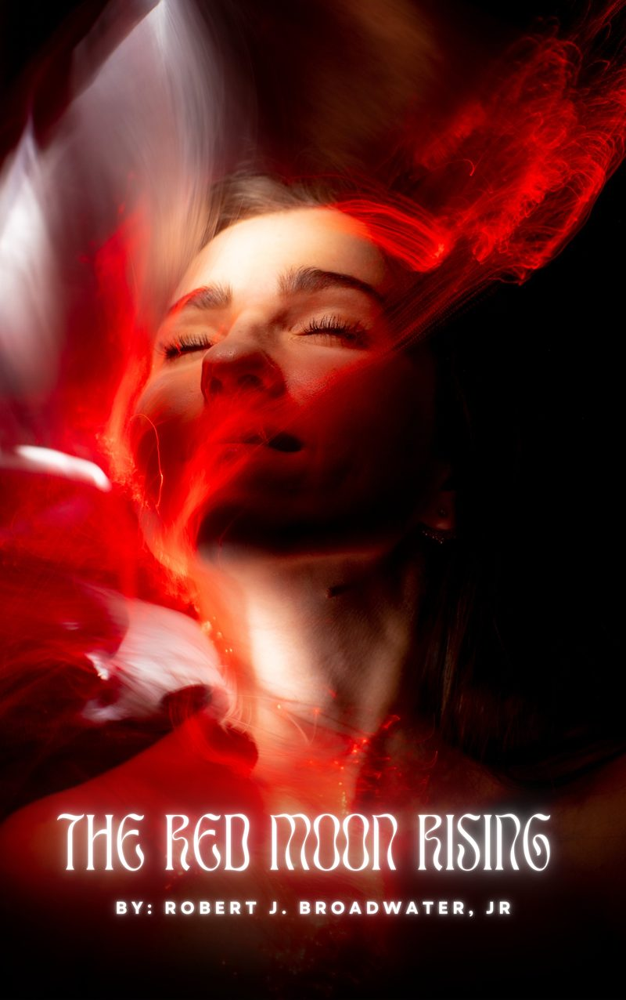
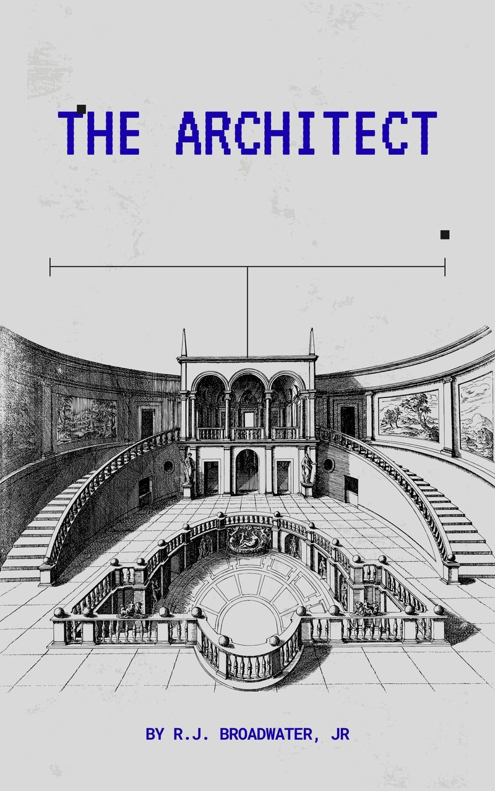
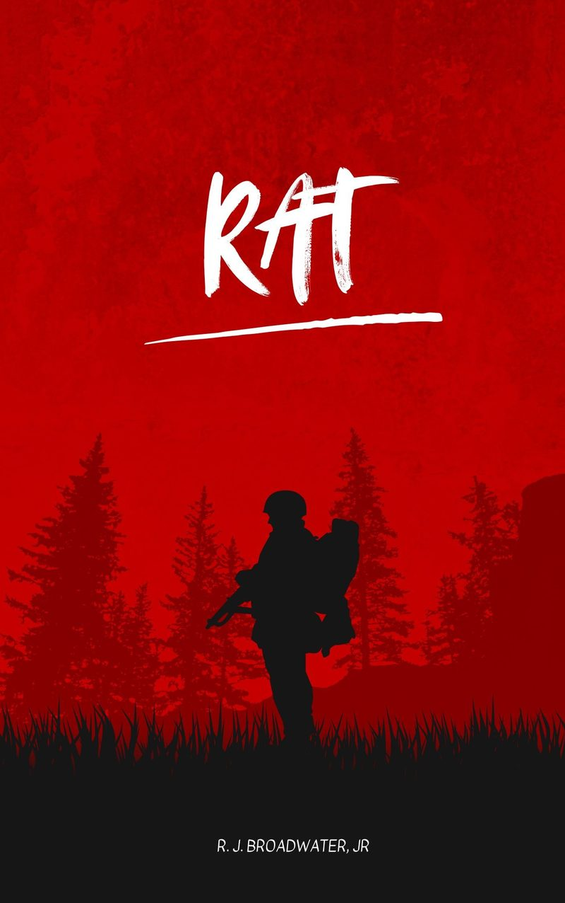
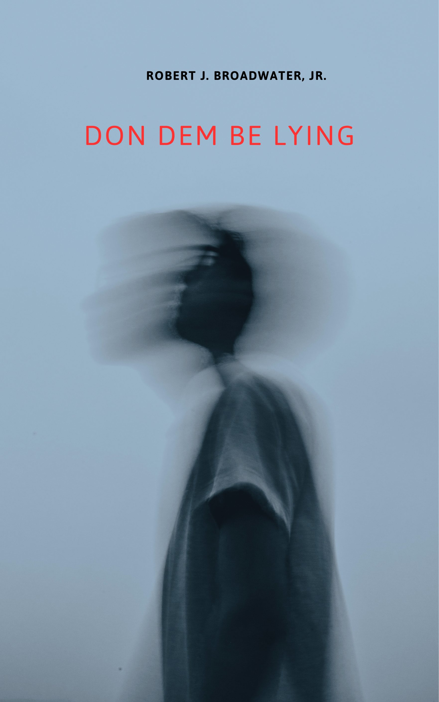
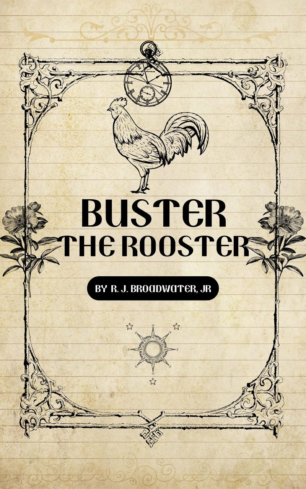

Supernatural & Thriller
Where the Buried Truth Wakes

Supernatural Thriller
The Chain of Heaven
An earthquake splits a mountain. A golden cage emerges. And the town of Sable Ridge awakens something older than heaven itself.

Urban Fantasy
The Red Moon Rising
Dee is a sweet Georgia girl with a soft heart. Every three years, when the Red Moon climbs the sky, something ancient wakes inside her.

Sci-Fi Thriller
The Architect’s Shadow
Leah was never supposed to be a hero. Then she found her grandfather’s encrypted files — and the neural link he left behind.
STONE
Spiritual Fable
The Living Stone
She had everything life could offer — and still felt empty. A monk. A seven-day climb. A truth she never expected.
Literary & Historical Fiction
Stories That Remember

Historical Fiction
The War Inside
Private Elijah Brooks believed a uniform would make America see him differently. France, 1944. He was wrong about the uniform.
GARDEN
Memoir
Mother’s Garden
Christine Broadwater didn’t just plant roses — she summoned them. A love letter to a mother who made drama bloom beautifully.

Martial Arts Fiction
Blacko
In the mist-veiled hills of the Middle Kingdom, a swordsman moves like shadow. His blade is Redrum. His name is whispered, never spoken aloud.

Political Thriller
R.A.T.
Recon. Assault. Tactics. Three operatives who lost everything. Their first mission: take down the senator who legalized hate.
Southern Fiction & Magic Realism
Where the Ordinary Holds the Extraordinary

Southern Magical Realism
I Stole the Pussy Pie
Miss Lacey bakes pies that carry truth inside them. One stolen slice — and a whole life changes.

Street Lit
Don Dem Be Lying
Ex-cop. Retired pimp. Almost a junkie. The block don’t never sleep, and neither does his past.
YOUR
ASS
Southern Comedy
Wash Your Ass
Auntie Laverne ran her kitchen like it was the CDC. Two tests before you sat at her table. Jalen only passed one.

Spoken Word
Buster the Rooster
A barnyard tale with a wink and a crow. Buster rules the roost until the morning everything changes.